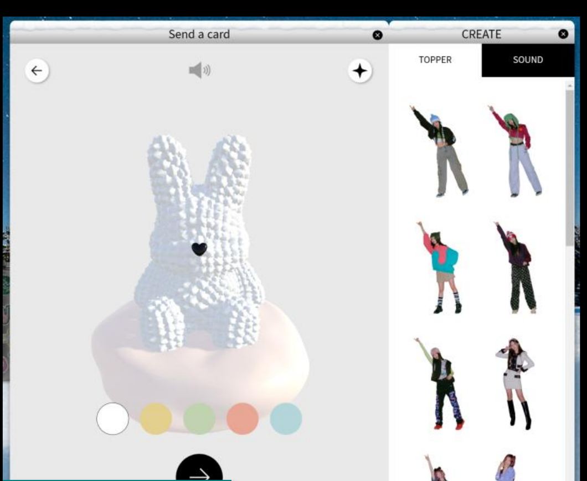

HYBE 산하 레이블 ADOR 소속 NewJeans의 「Ditto」 프로모션 홈페이지 리뉴얼. 아트디렉터의 비주얼 상상을 기술적으로 구현 가능한 인터랙션으로 옮기고, 팬이 직접 사진을 꾸며 SNS에 공유하는 포토부스 기능을 기획했습니다.

「Ditto」 홈페이지의 핵심은 팬이 직접 인형·스티커·프레임을 골라 사진을 꾸미고 공유하는 포토부스(Photo Booth) 기능이었습니다. 아트디렉터가 그리는 감성적인 비주얼 상상을, 실제 브라우저 환경에서 레이어 순서·리소스 로딩·일정 안에서 구현 가능한 사양으로 번역해야 했습니다.
브러시·스티커·배경 합성 등 아트디렉터가 원하는 표현을 웹 기술로 옮기는 과정 자체가 난이도 높음
다수의 브러시 효과·스티커 레이어가 겹치는 순서에 따라 결과물이 달라짐
컴백 일정에 맞춰 정해진 기한 안에 기능을 완성해야 함
완성한 사진을 저장·공유하는 흐름까지 매끄러워야 실제 확산으로 이어짐
기술과 일정을 함께 고려하며 아트디렉터의 상상을 단계적으로 현실화하는 접근을 취했습니다.
포토 촬영 → 브러시·스티커 편집 → 저장·공유까지의 사용자 플로우를 화면 단위로 정의
브러시 효과·스티커·배경 합성 순서를 기획서에 명시해 구현팀과 기준 정렬
컴백 일정에 맞춰 우선순위를 조정하며 기획서를 반복적으로 세분화
다양한 브러시·스티커 조합에서 저장·공유 결과물이 의도대로 나오는지 검증
컴백 일정에 맞춰 포토부스 기능 포함 홈페이지 리뉴얼 완료
실제 팬들이 사진을 꾸며 SNS(lemon8 등)에 활발히 공유
기획서 작성·아트디렉터 커뮤니케이션·일정관리·QA 담당
아트디렉터의 상상을 현실로 만들기 위해 기술과 일정을 함께 고려하며 조율하는 과정이 쉽지 않았습니다. 일정에 맞춰 Flow와 레이어 순서를 조율하는 과정을 거치면서 기획서를 더 세세하게 작성할 수 있었습니다.
실제 오픈 이후 팬들이 의도에 맞게 사진을 꾸미고 공유하는 모습을 보면서, SNS 공유 기능을 더 강화했더라면 더 사용자 친화적인 제품이 나왔을 것 같다는 아쉬움이 남았습니다.
* 본 자료는 포트폴리오 목적으로 개인 기여 범위와 작업 프로세스만을 요약해 공개했습니다. 클라이언트사(HYBE)의 내부 기획 문서·화면 사양·계약 정보는 포함하지 않았습니다. 서비스는 현재 종료되었습니다.
chaejenn@gmail.com